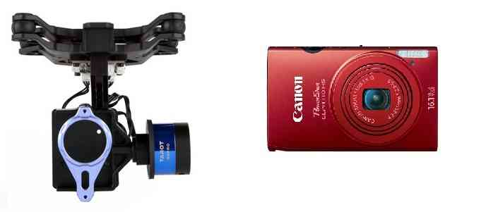

Cameras and Gimbals¶
Copter, Plane and Rover support up to 3-axis gimbals, including advance features like automated aiming of the camera at a Region of Interest (ROI), and automatic triggering of a camera shutter. Follow the links below to explanations of how to configure gimbals and shutter triggering.
{kind=link}
Gimbals¶
ArduPilot supports both brushless direct drive gimbals (Tarot, SimpleBGC, SToRM32) that have their own self-stabilization controllers and the simpler servo-driven gimbals in which ArduPilot controls the stabilisation.
Brushless PWM - brushless gimbals that accept PWM or SBUS input for angle control
Gremsy Mio, Pixy, S1, T3, T7 and ZIO - high quality 3-axis gimbals
Servo Gimbals — older-style servo-driven gimbal where ArduPilot provides stabilisation
SimpleBGC (aka AlexMos) Gimbal Controller - a popular 2-axis or 3-axis brushess gimbal controller which uses a custom serial interface
Siyi ZR10, ZR30 and A8 - 3-axis gimbal and camera
SToRM32 Gimbal Controller — an inexpensive 2-axis or 3-axis brushless gimbal controller which responds to MAVLink commands (a richer format than PWM) over a serial interface
Mount control is covered on the Gimbal / Mount Controls page.
Cameras with MAVLink interfaces¶
Camera Control and GeoTagging¶
ArduPilot allows you to configure the camera shutter output port (servo, relay).
Note
be sure to set the CAMx_INTRVAL_MIN to be greater than the fastest the camera can take photos when using the camera trigger functions.
In camera mission planning you can specify when the camera shutter should trigger, or a distance that the vehicle should travel between shots.
Camera manufacturers use their own mechanisms for remote control of the camera (including its shutter). The topics explain how to configure the camera shutter, and list a number of different approaches for converting the output signal into the form expected by your particular camera:
Camera Triggering using CHDK Tutorial (non-standard integration)
Common fixes for poor video quality¶
Some of the more common causes and solutions for poor video are listed below:
“Jello” effect (or rolling shutter) is a by-product of using a camera with a CMOS sensor (GoPro, et al) caused by vibration from unbalanced props/motors and can be mitigated by mounting the camera on soft rubber, silicone, foam ear plugs or sometimes just on velcro.
digital and optical stabilization systems found in many cameras often do not perform well because of the vibrations found on many multicopters.
Exceptions: the Sony video camera balanced steady shot system is very effective even at maximum 30 power zoom.
For better and smoother Yaw, use Expo control on your RC and lower the ACRO_Y_RATE gain in the autopilot.
It is important to remember that even with a perfect setup, photography is an art as well as a science. Using the camera pointing straight to the ground is a good place to start, but more dramatic viewpoints can be achieved with angles other than vertical. Mount about 40 degrees deviation from vertical to obtain mainly ground photos but with an oblique view. About 70 degrees off vertical will give you a lot more sky thus giving more scenic photos. ArduPilot will stabilize the gimbal to whatever position you set.
Detail topics¶
- Brushless PWM
- Gremsy Pixy U Gimbal
- Servo Gimbal
- SimpleBGC Gimbal Controller
- Siyi ZR10, ZR30 and A8
- SToRM32 Gimbal Controller
- FLIR Vue Pro Thermal Camera
- Airpixel Entire Geotagger
- DROTAG x Geotagger
- Seagull IR Camera Trigger
- Seagull MAP2 Camera Trigger
- Seagull MAP-X2 Camera Trigger and Logger
- Seagull REC Camera Trigger
- StratosnapperV2 Camera Trigger
- Camera Trigger Directly from AUX Ports
- Camera Triggering Configuration
- Camera Triggering using CHDK
- Camera Triggering using CHDK Tutorial
- RunCam Camera Control
- Gimbal / Mount Controls
- ViewPro gimbals
- DJI RS2 and RS3-Pro gimbals